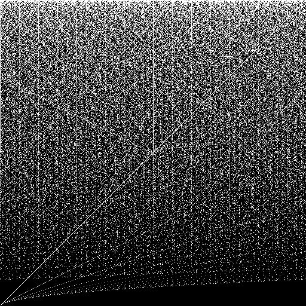
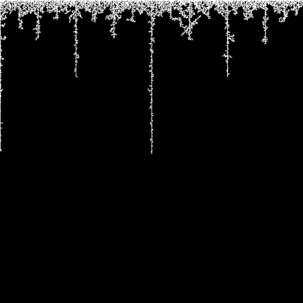
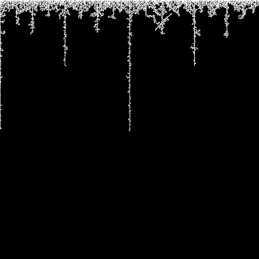

HXY Images
Introduction
HXY images are mathematical images that I discovered. Some of them are in the gallery below.
A description of them is in this documentation.
Figure 1. Illustration of the HXY image whose width is 4 pixels and height is 3 pixels.
For Figure 1, the variables and sets defined in the documentation would be:
- w = 4
- h = 3
- X = {0, 1, 2, 3}
- Y = {0, 1, 2}
- P = {0, 1, 2, 3, 4, 6}
Software
My program hxy writes HXY images, including the ones in the gallery below.
It is free and available in this repository.
Gallery
Figure 2. The square HXY images whose side lengths are 512 pixels and 509 pixels, respectively.

 Figure 3. The special shapes in Figure 2.

Figure 3. The special shapes in Figure 2.


To see the relationship between Figure 2 and Figure 3, do the following in GIMP (or do its equivalent in another graphics program):
- Copy and paste (or save and open) an image from Figure 2.
- Use Tools → Paint Tools → Bucket Fill to flood-fill the top row with a color other than black or white.
- Use Select → By Color to select all white pixels, then use Colors → Colorize to color them black.